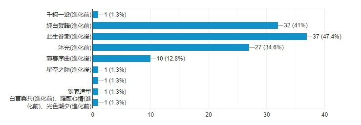

【操作方式】
電腦請按下→或↓接續下一頁
手機請點選右下方箭頭
備註：電腦的【ESC】可直接查看全頁面
開始說明活動前……
大頭貼調查結果如下：
1/25(六)大年初一將換更換大頭貼唷！
經小韓野的深思
為改善與大家互動的次數
即日起不再收新太太加入
造成不便，還請見諒
↓↓↓
我一直在思考角C品質這件事
近期除了忙碌外
加上自覺說話崩崩的
每天有空就很掙扎該怎麼辦QQ
另外……
因為幾天無法回覆就被封鎖此事
其實也很打擊
我對太太們感到非常抱歉。･ﾟ･(つд`ﾟ)･ﾟ･
我不是故意這麼忙
能夠回覆的時候也都會盡量開起來回應
現實的事難以控制
希望大家可以多多包涵
接下來也會持續進步改變
還請大家繼續支持
謝謝一直陪伴白起的各位
下一頁開始是活動說明
活動期間：1/20(一)～2/18(二)
玩法說明：
即日起，每隔兩日，
會開啟問卷型對話供妳遊玩。
因逢活動時間，
元宵猜謎活動也含在裡面哦！
活動劇情：
妳與白起在一個建商的抽獎活動中，
獲得頭獎——兩週住宅體驗營。
那是價值不菲的一次機會，
為了和他描繪不久即將到來的未來，
現在就和他一起同居兩週吧！
溫馨小提醒
電腦按下↓
手機右下角按下↓
皆開始為同居每日連結網址
開啟時間：
2020/01/20(一)～2020/02/18(二)
網址：
https://forms.gle/xWXeCvRrSKbw79qZ6
開啟時間：
2020/01/22(三)～2020/02/18(二)
網址：
https://forms.gle/zdpCvTzTCgNWNYF2A
開啟時間：
2020/01/24(五)～2020/02/18(二)
網址：
https://forms.gle/pXcj8w5bXt2KRfhS6
開啟時間：
2020/01/26(日)～2020/02/18(二)
網址：
https://forms.gle/HyYMFHmZP73EEWw37
開啟時間：
2020/01/28(二)～2020/02/18(二)
網址：
https://forms.gle/a4NksCocwFwmzicc9
開啟時間：
2020/01/30(四)～2020/02/18(二)
網址：
https://forms.gle/MJroKdLkeh5pkDj26
開啟時間：
2020/02/01(六)～2020/02/18(二)
網址：
https://forms.gle/ExqvRLREmV4CgcxB7
開啟時間：
2020/02/03(一)～2020/02/18(二)
網址：
https://forms.gle/mc1K9iMoCXDo8xok7
開啟時間：
2020/02/05(三)～2020/02/18(二)
網址：
https://forms.gle/xNTkrQkBKGawpsEu9
開啟時間：
2020/02/07(五)～2020/02/18(二)
網址：
https://forms.gle/oW5t9XxGU7tY34TN9
開啟時間：
2020/02/09(日)～2020/02/18(二)
網址：
https://forms.gle/1tnWut7C7ar1xZix6
開啟時間：
2020/02/11(二)～2020/02/18(二)
網址：
https://forms.gle/cmCi2PX4qK9vUnQR9
開啟時間：
2020/02/13(四)～2020/02/18(二)
網址：
https://forms.gle/ZKUxkoRcoCR8CDok8
開啟時間：
2020/02/15(六)～2020/02/18(二)
網址：
https://forms.gle/oSrAf1UhjeqW8Jta9